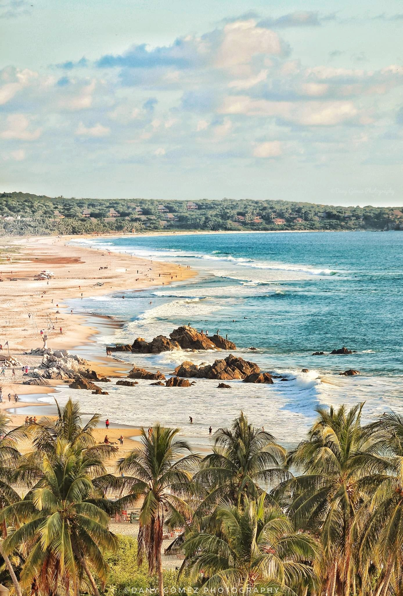
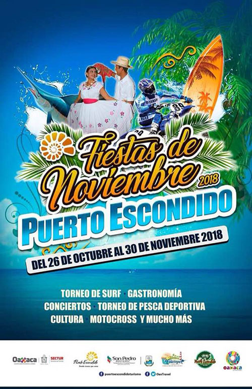
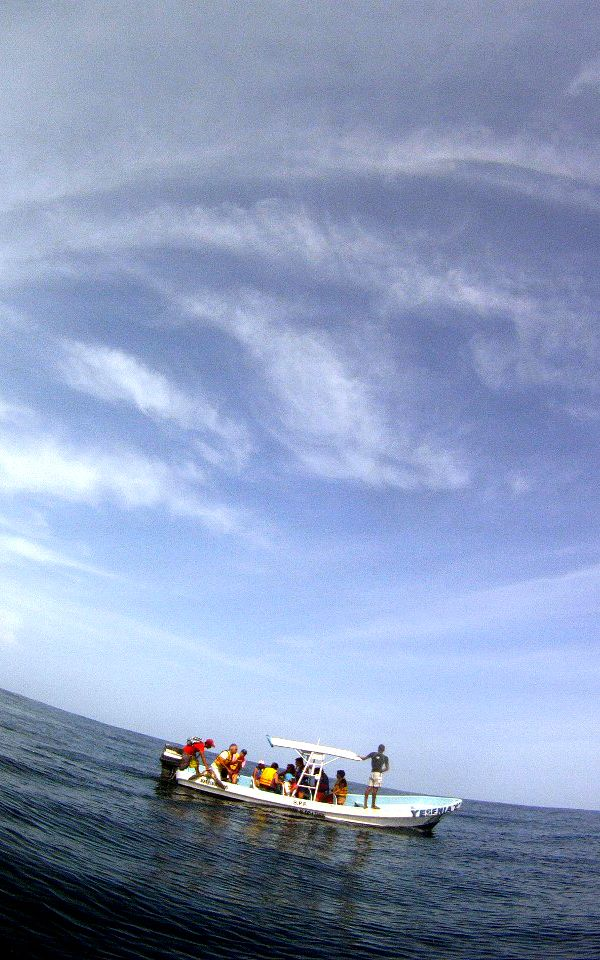

|
PUERTO ESCONDIDO
En el extremo de la cordillera de la Sierra Madre del Sur que serpentea a través de Oaxaca y baja al océano Pacífico, se asienta el destino costero de Puerto Escondido. La ciudad se levanta en torno de una bahía brillante bordeada por gigantescas formaciones de roca.
Te espera con muchas sorpresas para compartir con todo aquel que desee vivir la aventura, la belleza y lo sublime de la vida en un solo lugar; aquí confluyen civilizaciones milenarias, arquitectura colonial y tradiciones vivas. Sus playas son de las más visitadas en el país porque son bastante tranquilas la mayor parte del año; Puerto Escondido es uno de los destinos favoritos por nacionales y extranjeros.
Este retazo de cielo en el Océano Pacífico es ideal para quienes buscan el refugio y el cobijo del mar; tiene siete hermosas playas para encontrarlo. Un destino cálido y encantador,con lagunas costeras, aves exóticas y varias especies de tortugas, lo convierten en el lugar ideal para el surf, el paracaidismo y el buceo. |
|
 |
 |
 |